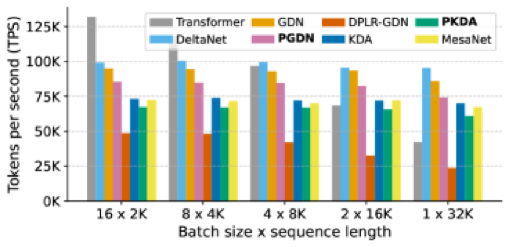

Why it matters왜 중요한가
The bottleneck isn't more parameters — it's that linear recurrences only take a first-order step.
병목은 파라미터가 아니라, 선형 순환 모델이 1차 스텝만 밟는다는 데 있다.
Under the Test-Time Regression (TTR) lens, a recurrent layer is silently learning a key→value linear map by online least squares. DeltaNet and its gated cousins implement this with a single SGD-style update — a first-order approximation that throws away the curvature (the key Gram matrix) of the regression. "Exact" solvers that keep the curvature, like Mesalayer and MesaNet, either lose parallelism or become numerically fragile. The authors thread the needle: keep the cheap delta-rule recurrence, but precondition the write key with a diagonal estimate of the inverse Gram. It is curvature-awareness without the cost of a full inverse.
Test-Time Regression(TTR) 관점에서 순환 레이어는 사실 key→value 선형 사상을 온라인 최소제곱으로 학습한다. DeltaNet과 게이트 변형들은 이를 SGD식 한 번의 업데이트로 구현하는데, 이는 회귀의 곡률(key Gram 행렬)을 버리는 1차 근사다. 곡률을 살리는 "정확한" 해법(Mesalayer, MesaNet)은 병렬성을 잃거나 수치적으로 불안정해진다. 저자들은 그 사이를 통과한다 — 값싼 델타 규칙 순환은 그대로 두되, write key를 역 Gram의 대각 추정치로 전처리한다. 전체 역행렬 없이 곡률 인식을 얻는 것.

By the numbers핵심 숫자
(PGDN/PKDA vs GDN/KDA)처리량 오버헤드
(PGDN/PKDA vs GDN/KDA)
(PGDN, 340M)MesaNet 대비 빠름
(PGDN, 340M)
(PGDN 26.17 vs GDN 24.77)ICR 평균 향상, 340M
(PGDN 26.17 vs GDN 24.77)
(PGDN 34.99 vs GDN 33.87)ICR 평균 향상, 1B
(PGDN 34.99 vs GDN 33.87)
(15B / 50B tokens)사전학습 규모
(15B / 50B 토큰)
(inverse Gram approx.)전처리기 형태
(역 Gram 근사)
Results — preconditioning helps everywhere결과 — 전처리는 어디서나 도움된다
| Model | Scale | CS avg | ICR avg | Δ ICR |
|---|---|---|---|---|
| DeltaNet | 340M | 47.41 | 22.59 | — |
| P-DeltaNet | 340M | 47.96 | 23.84 | +1.25 |
| GDN | 340M | 48.86 | 24.77 | — |
| PGDN | 340M | 49.96 | 26.17 | +1.40 |
| KDA | 340M | 49.12 | 25.88 | — |
| PKDA | 340M | 49.89 | 26.76 | +0.88 |
| GDN | 1B | 55.44 | 33.87 | — |
| PGDN | 1B | 56.38 | 34.99 | +1.12 |
In one diagram한 장의 그림
Idea: reframe the recurrence as preconditioned least squares아이디어: 순환을 '전처리 최소제곱'으로 재정의
One theory, two operators
With the exact inverse key Gram as preconditioner, linear attention applied-to-query (ATQ) and DeltaNet applied-to-key (ATK) become provably equivalent (Theorem 3.1) — both recover the exact least-squares map. Preconditioning is the missing axis that unifies them.
정확한 역 key Gram을 전처리기로 쓰면, linear attention의 query 적용(ATQ)과 DeltaNet의 key 적용(ATK)이 증명상 동치(정리 3.1)가 된다 — 둘 다 정확한 최소제곱 사상을 복원. 전처리는 둘을 통합하는 빠진 축이다.
Diagonal preconditioner
The exact inverse is sequential (Sherman–Morrison) and kills parallelism. So they keep only the diagonal: accumulate coordinate-wise squared keys (Aₜ = Aₜ₋₁ + k⊙k), like Adam's second moment. A pretrained DeltaNet's Gram is shown to be largely axis-aligned, justifying it — and it admits an efficient chunkwise prefix-sum form.
정확한 역행렬은 순차적(Sherman–Morrison)이라 병렬성을 죽인다. 그래서 대각만 남긴다 — 좌표별 key 제곱을 누적(Aₜ = Aₜ₋₁ + k⊙k), Adam의 2차 모멘트처럼. 사전학습된 DeltaNet의 Gram이 대체로 축 정렬임을 보여 정당화하고, 이는 효율적 청크 prefix-sum 형태를 허용한다.
How it works어떻게 작동하나
- Read the recurrence as least squares순환을 최소제곱으로 읽기View the delta update Sₜ = Sₜ₋₁ − βₜ(Sₜ₋₁kₜ − vₜ)kₜᵀ as one preconditioned SGD step on the key→value least-squares loss.델타 업데이트 Sₜ = Sₜ₋₁ − βₜ(Sₜ₋₁kₜ − vₜ)kₜᵀ를 key→value 최소제곱 손실에 대한 전처리된 SGD 한 스텝으로 본다.
- Precondition the write key (ATK)write key 전처리 (ATK)Replace the write key kₜ with k̃ₜ = Pₜ₋₁kₜ / (1 + kₜᵀPₜ₋₁kₜ). With exact P this gives the closed-form least-squares solution; the read key stays separate.write key kₜ를 k̃ₜ = Pₜ₋₁kₜ / (1 + kₜᵀPₜ₋₁kₜ)로 교체. 정확한 P면 최소제곱 닫힌 해가 되고, read key는 별도로 유지된다.
- Approximate P diagonallyP를 대각으로 근사Track second moments Aₜ = αₜᴾAₜ₋₁ + βₜᴾ(k⊙k) and set P = Diag(A)⁻¹. Pass a stabilized, squashed transform Bₜ ∈ [1/x, x] (x ≤ 2 keeps transition eigenvalues ≤ 1) for trainability.2차 모멘트 Aₜ = αₜᴾAₜ₋₁ + βₜᴾ(k⊙k)를 추적하고 P = Diag(A)⁻¹로 둔다. 학습 안정성을 위해 squash 변환 Bₜ ∈ [1/x, x](x ≤ 2면 전이 고유값 ≤ 1)를 전달한다.
- Fuse into chunkwise kernels청크 커널로 융합Because P is diagonal and orthogonal to decay, plug it into existing DeltaNet/GDN/KDA chunkwise forms → PDN, PGDN, PKDA with custom Triton kernels at ~10% overhead.P는 대각이고 decay와 직교하므로 기존 DeltaNet/GDN/KDA 청크 형태에 끼워넣는다 → 커스텀 Triton 커널로 PDN, PGDN, PKDA를 ~10% 오버헤드에 구현.
What to take away그래서, 가져갈 것
Curvature is a free axis. Linear recurrences were leaving second-order information on the table; a diagonal preconditioner picks it up at ~10% cost.
곡률은 공짜 축이다. 선형 순환 모델은 2차 정보를 버려왔는데, 대각 전처리기가 ~10% 비용으로 이를 회수한다.
One framework unifies two. Exact preconditioning makes linear attention and DeltaNet the same operator — a clean theoretical bridge.
하나의 틀이 둘을 통합. 정확한 전처리에서 linear attention과 DeltaNet은 동일 연산자가 된다 — 깔끔한 이론적 다리.
Stays fast. Diagonal approx → chunkwise parallel → >20% faster than MesaNet, the curvature-keeping baseline.
여전히 빠르다. 대각 근사 → 청크 병렬 → 곡률 유지 기준선 MesaNet보다 20% 이상 빠름.
Drop-in across the family. Same trick applies to DeltaNet, GDN, and KDA — preconditioning composes with decay and gain (the DGPS taxonomy).
계열 전반에 끼워넣기. 같은 트릭이 DeltaNet·GDN·KDA에 적용 — 전처리는 decay·gain과 조합된다(DGPS 분류).